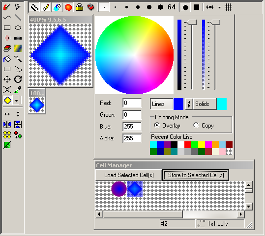

The integrated graphics editor has many features. For details about a particulat feature, you can click on the screenshot over a tool or area about which you want more information, or you can scroll down to see features listed in the order they appear in the menus. Not all features from the menus are visible in the screenshot.
Select any portion of an external image file to import into the cell editor. The size if the imported graphic must be a multiple of the width and height of the cell size, and must fit in the current size of teh graphics editor at the current magnification.
Export the contents of the image currently loaded into the cell editor to an external file. Supported file formats are PNG, BMP, GIF, JPG and TIF. The PNG format is recommended for retaining alpha transparency.
Exports the entire graphic sheet (as currently persisted in the Cell Manager window) as an external image file. Only PNG format is supported. The PNG retains alpha transparency.
Imports an external image as the entire contents of the graphic sheet, replacing all graphics currently in the sheet. Only PNG format is supported. The imported graphic must be exactly the size of the graphic sheet: c*w pixels wide and r*h pixels tall, where c is the number of cell columns, w is the width of each cell in pixels, r is the number of cell rows and h is the height of each cell in pixels. This feature is particularly useful if you've exported an entire graphic sheet for editing in an external program and would like to re-import the updated version.
Note: you can also import a graphic sheet from another project by right-clicking on the "Graphic Sheets" folder in the project tree and selecting "Import From..."
You can use the "+" and "-" keys, the toolbar dropdown selector or the Zoom menu to increase and decrease the magnification level of the magnified view where editing takes place. Higher levels of magnification allow higher precision not only in the sense that you can see more detail, but in the sense that the mouse can be positioned at finer divisions within a pixel, which may be especially useful when anti-aliasing is turned on. For example, when the magnification is at 4x4, the mouse can be positioned at 16 positions within each pixel, but at 8x8 magnification, the mouse can distinguish 64 different positions within each pixel, each which will yield different results when anti-aliased. Keep in mind that, since this is designed as a tile editor, editing large graphics at high magnifications may not be practical.
You can undo your most recent actions in the editor. This cannot be used to undo operations such as loading and storing graphics, but can be used to undo most or all operations confined to the cell editor. The undo buffer stores 10 images representing the 10 most recent states of the editor.
If you undo an operation that you wanted to keep, redo will cycle the opposite direction through the 10-level undo buffer.
After using the irregular selection, rectangular selection, select all, or color wand commands, you can cut the selection to remove it from the image (erase it) and optionally paste it elsewhere. The clipped image is stored in teh system clipboard so it can be pasted into other applications. However, support for alpha transparency is limited. If you use the Cut command without any active selection, the entire image will be copied, but nothing will be deleted.
After using the selection tools mentioned in "Cut" above, you can copy the selected portion of the image to the system clipboard without erasing it from the image. If you use the Copy command without any active selection, the entire image will be copied.
You can paste images that have been cut/copied from other tiles or other graphic sheets or even external applications. However, external applications will likely not provide alpha transparency support. For transferring images with transparency to the graphics editor, the "import graphic" command is best. After you paste an image, it is represented as a "floating" selection, which means that you may drag it to another position or transform it with rotation and scaling without affecting the image underneath.
If there is a "floating" selection, remove it without merging it into the current image, otherwise replace the selected area with transparent pixels and de-select it.
After moving, rotating or sizing the selection, you can use this command to reset the selection to its initial position.
Select the entire area in the cell editor for operations such as cut, copy, rotate, scale and move.
If any pending selection is still "floating" in a state where you can move it (for example after a paste or move operation), it will be "dropped" onto the image (merged). The selection will then be un-highlighted, so there is no selection.
Flip the current selection horizontally accross the center of the selection. If there is no selection, the entire tile is flipped.
Flip the current selection vertically accross the center of the selection. If there is no selection, the entire tile is flipped.
This effectively puts the right half of the tile on the left side of the editor and the left half of the tile on the right. This is only supported when the width of the tile is an even number of pixels (in order to ensure that clicking the button twice will leave you where you started). The command will work when the width is odd, but the rightmost column of pixels will be untouched. This command is useful for adjusting the seams at the edge of the tile to make sure it merges smoothly when tiled with itself. If there is a floating selection when you execute this command, it will not move.
This effectively puts the bottom half of the tile on top of the editor and the top half of the tile on the bottom. This is only supported when the height of the tile is an even number of pixels (in order to ensure that clicking the button twice will leave you where you started). The command will work when the height is odd, but the bottom row of pixels will be untouched. This command is useful for adjusting the seams at the edge of the tile to make sure it merges smoothly when tiled with itself. If there is a floating selection when you execute this command, it will not move.
Shows a window full of this image tiled over the whole window. This is useful to ensure that this image tiles cleanly.
Allows you to replace one range of colors with another based on hue. Click and drag an arc around the edge of the left-hand color wheel to define a range of hues that will be affected. Then click and drag an arc around the edge of the right-hand color wheel to define a range of hues that will replace the range selected in the left wheel. For example, if you click on yellow and drag clockwise through magenta in the left color wheel, and then click on green and drag counter-clockwise through blue in the right color wheel, then yellow hues will be replaced with green, orange hues with sea green, red hues with cyan, and magenta hues with blue. All the hues in between will also be smoothly mapped to corresponding hues in the target range. This is useful for recoloring objects, but is not effective on gray, and can't be used to enhance or diminish brightness or saturation levels.
As you drag the color ranges you can see a preview of the result in the editor, however, if you move a window in front of the image and cause it to re-display, the original image will be drawn rather than the preview. The proposed (preview) image is only drawn when an arc is being dragged.
If a selection is active when using this tool, only the selection will be affected, otherwise the entire graphic will be affected.
Add random noise to the image. This is useful for large smooth areas that should show some texture. You will be prompted for a noise level, which determines how much the image will be affected. If a selection is active with using this tool, only the selected area will be affected, otherwise the entire image will be affected. Note the alpha level of each pixel remains the same. No noise will appear in transparent areas.
By default, any selection made in the editor is represented by highlighting it in blue. If the default selection color of blue is too distracting for your current task, you can change the color, select a fainter variation, or turn off the selection highlighting completely. Ctrl-T is a handy shortcut to remember when you quickly want to see what the image looks like without the highlight and then turn it back on. Keep in mind that this highlight color also affects the Cell Manager, so if you turn off the highlight and wonder why you can't see any selected cell in the Cell Manager, remember to turn it back on.
The backdrop appears behind your image and represents areas that are transparent in your image. It exists to clarify which portions of your image are transparent versus a particular (opaque) color. If it's hard to determine which pixels are transparent with the default backdrop, you can change to a variety of other backdrops. Generally you want to use light backdrops with dark images and darg backdrops with light images in order to contrast the transparent pixels from the opaque pixels.
Turns on a grid of white lines delineating the edges of the pixels. This is only applicable for magnifications of 4x4 or higher.
Works like a paint brush or a pencil. Just drag strokes out in the editor. Note that you can use this with the "Filled Shapes" and "Gradient Fills" options to draw an irregular filled shape freehand.
Draw straight lines or edges. Click one then move the mouse to another location to draw a straight line between the two points. Move again and click again to draw a series of connected lines. Right-click to finish. Use this with the "Filled Shapes" and "Gradient Fills" options if you want to draw shapes with straight edges that are filled with a solid or gradient fill. Dragging the mouse while using this tool will cause it to behave like the Freehand Drawing tool, but allow you to then proceed to add straight lines afterward. If the "Lock Tools Proportions" option is selected (use the Shift key to activate and de-activate on the fly) the angles of the lines will be confined to a limited set.
Click once to define the starting point. Click again to define and end point. Click a third time to affect the end of the line near the starting point, and click a fourth to affect the end of the line near the end point. Affecting the line generates a smooth curve leading from the starting point ot the end point. Continue this process by clicking a fifth time to add a new end point, a sixth to affect the beginning of the new segment, and a seventh to affect the end of the new segment. Repeat as much as you like to form a series of connected curves. This can be used with "Filled Shapes" and "Gradient Fills". Right click at any time to make the image you're looking at permanent.
Click and drag a single straight line. Use the Shift key or "Lock Tools Proportions" if you want to confine the angle of the line
Click and drag a rectangle into the image by specifying the opposite corners. Use the Shift key or "Lock Tools Proportions" if you want to draw a square.
Click and drag a rectangle the defines the boundaries of an ellipse to add to the image. Use the Shift key or "Lock Tools Proportions" if you want to draw a circle.
Draw dithered pixels on the image. This is most effective when the Anti-Alias option is on. The airbrush will draw only opaque pixels when anti-aliasing is off, but will draw many partially opaque pixels when performing anti-aliasing. The airbrush uses the current solid/fill color to draw pixels onto the image in random patterns. The radius of pixels affected (around the cursor) is determined by the current pen size.
Blend hard edges between two colors into a smooth gradient. This is useful for eliminating seams. The radius affected by this tool is determined by the pen size. This tool may have unexpected effects when used around transparent pixels. It tends to affect transparent pixels dramatically because transparent pixels, unlike other pixels, have no opposing effect on the colors around them. It's not possible to "blend" transparency into an opaque color, only to "blend" an opaque color into transparency... kind of like trying to blend paper with ink.
Draw 100% transparent pixels onto the image, replacing existing pixels. Selecting this tool automatically selects a large pen size. Remember to switch back to the desired size before using another tool. The effect of this tool is the same as selecting the "Copy" coloring mode, the "Freehand Drawing" tool, the "Large" pen size, and a color with alpha level 0, but easier to accomplish, and doesn't actually change the coloring mode or current color.
Draw color cradients onto the image. Click and drag a range onto the image to draw the gradient. The gradient is formed by generating a smooth series of colors between the starting point and the ending point of the drag with the Solid color at the starting point and the Line color at the ending point. This range is then extended perpendicular to that line, and reversed and repeated parallel to the line to fill the image. For example, dragging from the top of the image to middle of the image will draw a gradient from the solid color at the top to the line color in the middle and mirror that on the bottom half of the image. The gradient will fill the horizontal space with stripes of the same color filling each row. If there is an active selection the gradient fill will only affect the selected area.
Flood fill areas of similar colors with the currently selected solid color. Click on a pixel and drag to nearby pixels to specify a range of colors that you want to be affected by the fill. If you click on a single pixel, only pixels with exactly that color will be flooded with the new color. If you drag to different color, both colors will be affects, as will any colors that are "between" those two colors. "Between" means that the largest difference in the R, G, B and A components of the color from the source color is less than or equal to that difference between the end color and the start color. If the "Affect Unjoined Color Regions" option is selected, this tool will affect all pixels of these colors in the image instead of only affecting adjacent (connected) pixels.
This is similar to the flood fill, but instead of changing the pixels' colors, they are selected as the active selection.
Click and drag a rectangular area to select it.
Draw an outline around an arbitrarily-shaped area to select it.
As soon as you start dragging with this tool, the selection is effectively cut from the image and "floated" above it so you can move it to any location you want. The image is moved in the direction and distance determined by the drag. If there is no selection the entire image is "floated" and moved.
Drag the mouse rightward or downward to rotate the selection clockwise. Drag the mouse leftward or upward to rotate counter-clockwise. Anti-aliasing is recommended for smooth results. If there is no selection, the entire image is "floated" and rotated.
Drag rightward to widen (stretch) the selecttion. Drag downward to increase the height of the selection. Drag leftward or upward to compress the selection. If you drag left or up far enough, the image will be inverted and the actions above will then have the opposite effect. If there is no selection, the entire image is "floated" and affected.
Clicking with this tool will select that color under the cursor as the active color. This is useful if you want to exactly match a particular color to add something new to the image using that color (especially if it's no longer in the recent colors list). Most tools will allow you to right-click to temporarily switch to the color dropper and do a "quick pick" of the pixel color currently behind the cursor, without having to explicitly switch tools.
This custom tool selection is designed for specific customizable tools. A number of default custom tools are delivered as examples. Each of these delivered custom tool examples can be used with the "Draw Filled Shapes", "Gradient Fills" and "Lock Tools Proportions" options:
Notice that many of these tools are relatively restricted and don't allow you to adjust details like inner radius or different side lengths in the UI. This is because they are designed primarily as examples, and any additional customization is to be done by rewriting code. If you are comfortable writing C# code and recompiling SGDK2IDE.exe (with MakeSGDK2.bat) you can change the existing tools or create your own custom tools. The code is in the source file named CustTool.cs. To create a new custom tool, follow the example of the existing toold and remember to check a number of areas:
Note that all custom tools are defined in terms of a single click and drag operation. DrawTool will provide the Graphics object where the tool results are to be rendered, the starting point of the drag, the ending point, the line color (pen), the fill color (brush), and the currently selected tool options.
This option is a toggle that remains on or off for use with any of a number of other tools. It primarily affects lines and edges of shapes. When the options is on, smooth edges will be generated by partially drawing pixels that are partially affected by the operation. For example if you draw a diagonal line at a width of 1 pixel, some pixels may be completely contained within the line and some will be completely outside, but others will be partially contained within the line. Depending on how much of pixel is contained within the line, the color of that pixel will be changed accordingly, resulting in a smoother appearance. A pixel only half contained within the line will only receive half the color (and will remain half-transparent if the background was transparent). Note that this also affects how the mouse position is interpreted. When you draw a single point with the mouse, and anti-aliasing is off, only a single pixel will be affected, either 100% or 0%. But if anti-aliasing is on, you can move the cursor to fractional pixel positions and see different results. In some cases where you want sharper/crisper edges, you may want to turn anti-aliasing off.
When this is turned on, connected lines, curves, rectangles, ellipses and similar tools will draw with an outline using the current line color. You can turn this off and just leave the "Draw Filled Shapes" option on if you prefer to draw a shape without an outline. It's not possible to turn this option off if you don't have "Fill Solid Shapes" turned on.
Although it's possible to draw a series of lines or shapes and then flood fill them with the color you want, this doesn't work well when using anti-aliasing because the anti-aliased pixels will not be properly affected by the fill operation. Therefore it's recommended that if you want to draw a shape with a solid fill color, you do so all at once by selecting this option before drawing the shape. The freehand drawing, freehand lines and bezier curves tools can all be used to draw filled shapes (along with the other more obvious choices for filled shapes -- rectangle, ellipse, custom tools and so forth).
When this option it turned on, filled shapes will be filled with a smooth gradient that extends from the line color around the perimiter to the solid color in the center. This option only has an effect when used in combination with the "Draw Filled Shapes" option.
When used with a tool where angle is relevant, this tool restricts the angles to horizontal, vertical, diagonal and a few primary angles in between. When used on a tool where angle is irrelevant, but size is relevant, the size will be confined to a square area instead of an arbitrary rectangle. That means ellipses will be drawn as circles, and rectangles as squares. This tool can be quickly toggled by using the Shift key. When shift is pressed while using a tool, the lock will be turned on, and if shift is released while using a tool, the lock will be turned off.
If you want to select or fill regions of similar color, and you want to affect those colors in the entire graphic instead of just affecting the areas adjacent to the cursor, turn this option on. This option changes the behavior of the flood fill and color wand tools by selecting all pixels of the specified colors instead of only selecting connected pixels of those colors.
The pen size can be quickly adjusted with the "[" and "]" keys, or you can immediately select any one of the available pen sizes from the toolbar or menu. The pen size determines how wide a line will be or how thick the outline of a shape will be when the "Draw Outlined Shapes" option is on. When drawing wide lines, you should also consider the pen shape. A round pen will produce rounded corners, effectively joining every pair of lines with a solid circle over the joint. A square pen, despite the name, is not necessarily square at the joints, but rather extends the edges of the lines at the joint until they meet. That means a sharp corner could cause the line's joint to extend quite a ways. There is a limit, however, and if you draw a sufficiently sharp angle, the corner will become a simple overlapping of two square-ended lines instead of a sharp angle. The available pen sizes jump from 11x11 to 64x64 pixels. The 64x64 pixel pen is not really intended for drawing lines (it would likely cover your whole tile no matter what you did) but is rather indended for tools that use the pen size to determine what area to affect. You can use this pen to affect (probably) your whole tile, or at least a much larger portion of it. Air brush and smooth are good examples.
This are is where your main editing takes place. It shows a magnified view of the graphic you are currently editing in memory. Changes made here are not permanent until you store them back into the graphic sheet with the Cell Manager.
This is exactly the same as the magnified view, but it shows the tile actual size instead of magnified. You can also use this window to edit the tile, but it will never let you deal with fractions of pixels since the mouse cursor is always positioned in whole pixels..
Click anywhere on this image to select a color by hue and saturation. You may then use the value/brightness and alpha sliders to adjust the other two aspects of the color. Note that clicking this wheel won't have much effect if the brightness slider is all the way down. All hues end up black at zero brightness.
Slide this up to make the current color brighter, or down to make it darker.
Slide this up to make the current color more opaque or down to make it more transparent.
If you would rather specify a color by its numeric red, green, blue and alpha components rather than using the sliders to select by hue, saturation, value and alpha, you can type exact numbers into these boxes. The result changes the current color just like clicking the color wheel and sliders would. You can also see the numeric components of the currently selected color reflected here while using teh color wheel and sliders. Each component must be a value from 0 to 255.
When the line color button is pressed it means that selecting a new color will change the line color. You can press the button if it's not pressed and you want to select a new line color. The current line color is displayed next to the line color button, and determines the color for lines drawn by various tools. Some tools may automatically press or un-press the line color button if line color is irrelevant or exclusively relevant to the selected tool.
If you want your current line color to be swapped with the current solid color, press this swap button, and they will switch places.
When the solid color button is pressed, it means that selecting a new color will change the solid color. You can press the button if it's not pressed and you want to select a new solid color. The current solid color is displayed next to the solid color button, and generally determines the color for solid filled areas drawn by various tools. Some tools may automatically press or un-press the solid color button if it is ittelevant or exclusively relevant to the selected tool.
Normally, when draw with a transparent or partially transparent color, it is merged with the colors underneath it using the "Overlay" mode (unless you are using the flood fill tool). So a half-transparent red pixel drawn over a blue pixel will leave half the blue in the original pixel and add half the red from the new color. However, you may wish to completely replace the graphics underneath (like the eraser does) instead of merging new graphics with the existing graphics. If so, select the "Copy" coloring mode.
This is a list of default or recently used colors available for quick access. Each time you draw using a particular color, it is inserted at or moved to the beginning of the recent color list. To re-use a color from this list, simply ensure that the appropriate line/solid color button is clicked and then click the color you want to use. Note that transparent colors show up with the diamond background.
This shows all the graphics within the graphic sheet currently being edited. Here you can select cells to edit, load them, and store them back in the project. You can select multiple cells to edit at once by clicking and draging over multiple cells. You are limited by the size of the screen and the current magnification level, but as long as the selection fits in the window at the current magnification, you should be able to load, edit and store it.